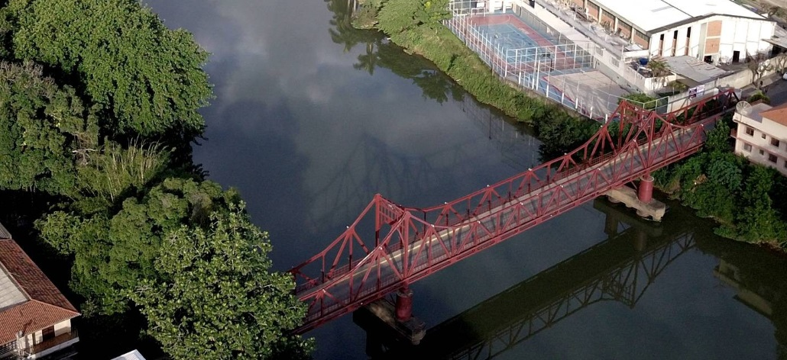

Água limpa, vida saudável
A água é um dos recursos naturais mais importantes para a sobrevivência de todos os seres vivos. Ela está presente em praticamente tudo o que fazemos: na alimentação, na higiene, na agricultura e no desenvolvimento das cidades.
Entretanto, a poluição, o desperdício e a falta de saneamento básico ameaçam a qualidade e a disponibilidade desse recurso. Preservar a água é essencial para garantir saúde, qualidade de vida e um futuro sustentável para as próximas gerações.
A importância da água
A água é indispensável para a manutenção da vida no planeta. Nosso corpo depende dela para funcionar corretamente, assim como os animais, as plantas e os ecossistemas.
Além do consumo humano, ela é fundamental para a produção de alimentos, geração de energia, atividades industriais e desenvolvimento econômico.
Apesar de existir em grande quantidade na Terra, apenas uma pequena parcela da água do planeta é água doce disponível para utilização humana. Por isso, seu uso consciente é tão importante.
Por que devemos cuidar da água?
- Para garantir água de qualidade para todos.
- Para evitar doenças causadas pela água contaminada.
- Para proteger os animais e os ambientes naturais.
- Para preservar rios, lagos e nascentes.
- Para garantir recursos às futuras gerações.

O que é saneamento básico?
O saneamento básico é um conjunto de serviços fundamentais para a saúde pública e para a preservação do meio ambiente.
Ele envolve o abastecimento de água potável, a coleta e o tratamento de esgoto, a limpeza urbana, o manejo dos resíduos sólidos e a drenagem das águas da chuva.
Quando esses serviços não são oferecidos adequadamente, aumentam os riscos de doenças, contaminação dos rios e degradação ambiental.
Os principais serviços do saneamento são:
- Abastecimento de água potável.
- Coleta e tratamento de esgoto.
- Coleta e destinação adequada do lixo.
- Drenagem e manejo das águas pluviais.
Investir em saneamento básico significa investir em saúde, dignidade e qualidade de vida para toda a população.

Tratamento da água
Antes de chegar às nossas casas, a água retirada de rios, lagos ou reservatórios precisa passar por diferentes processos de tratamento.
Essas etapas removem impurezas, partículas e microrganismos que podem oferecer riscos à saúde humana, tornando a água própria para o consumo.
Como funciona o tratamento da água?
- Captação: a água é retirada de rios, lagos ou reservatórios.
- Coagulação: são adicionados produtos que ajudam a reunir as impurezas presentes na água.
- Floculação: as partículas de sujeira se juntam e formam flocos maiores.
- Decantação: os flocos mais pesados se depositam no fundo dos tanques.
- Filtração: a água passa por filtros que retêm partículas menores que ainda permanecem.
- Desinfecção: é realizada a eliminação ou inativação de microrganismos causadores de doenças.
- Distribuição: após o tratamento e os controles de qualidade, a água é encaminhada para as residências.
Esse processo é essencial para prevenir doenças e garantir que a população tenha acesso à água segura e de qualidade.
Como podemos preservar a água?
A preservação dos recursos hídricos não depende apenas dos governos e das empresas. Cada pessoa pode contribuir por meio de pequenas atitudes realizadas no dia a dia.
Atitudes que fazem a diferença:
- Fechar a torneira enquanto escova os dentes.
- Tomar banhos mais rápidos.
- Evitar lavar calçadas com mangueiras.
- Não jogar lixo, óleo ou produtos químicos em rios e bueiros.
- Preservar árvores, nascentes e matas ciliares.
- Reutilizar água sempre que possível.
- Denunciar situações de poluição ambiental.
Pequenas mudanças de comportamento, quando praticadas por muitas pessoas, podem gerar grandes resultados.
Sobre nosso projeto
O projeto "Água Limpa, Futuro Sustentável" tem como objetivo conscientizar as pessoas sobre a importância da água limpa, do saneamento básico e da preservação dos recursos naturais.
Por meio da informação e da educação ambiental, buscamos mostrar que o acesso à água de qualidade é essencial para a saúde, para a dignidade humana e para o equilíbrio do meio ambiente.
Acreditamos que conhecer os problemas relacionados à água é o primeiro passo para transformar atitudes e construir uma sociedade mais consciente e responsável.
O futuro da água depende de nós!
A água é um bem essencial à vida, mas não devemos tratá-la como um recurso infinito. A poluição, o desperdício e a falta de saneamento mostram que ainda existem muitos desafios a serem enfrentados.
Preservar a água significa proteger a natureza, cuidar da saúde das pessoas e garantir melhores condições de vida para as próximas gerações.
Não precisamos esperar grandes mudanças para começar a fazer a diferença. Cada atitude consciente conta, e a responsabilidade pela preservação da água é de todos nós.